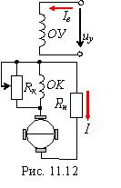

|

Электромашинный усилитель (ЭМУ) представляют собой специальный электрический генератор постоянного тока, выходная мощность которого может изменяться в широких пределах путем изменения мощности управления. Простейшим ЭМУ является обычный ГПТ независимого возбуждения, на обмотку возбуждения которого подается управляющий сигнал uу. Усиление мощности происходит за счет механической энергии, поступающей от приводного двигателя.
Для увеличения коэффициента усиления в ЭМУ устанавливают несколько обмоток управления. На якорь устанавливают двойной комплект щеток: по поперечной и продольной осям
(рис. 11.12). Щетки, установленные по поперечной оси, замыкаются накоротко, а к щеткам, расположенным по продольной оси, подключают нагрузку Rн. При подаче управляющего сигнала uу на независимую обмотку возбуждения ОУ и при вращении якоря в его обмотке между поперечными короткозамкнутыми щетками индуктируется ЭДС; по обмотке якоря будет проходить ток, имеющий значительную величину и создающий значительно больший поперечный магнитный поток, чем поток Фе. Этот поток индуктирует ЭДС между продольными щетками, которая вызывает ток нагрузки I.
Из рассмотренного принципа действия ЭМУ с поперечным полем очевидно, что, изменяя небольшой ток Iв в обмотке управления можно управлять значительным током I в цепи нагрузки, см. рис. 11.12. Магнитодвижущая сила, создаваемая током нагрузки I, направлена навстречу МДС обмотки управления ОУ, поэтому продольный магнитный поток якоря будет размагничивать машину. Для компенсации этой МДС на статоре ЭМУ помещают компенсационную обмотку ОК, которую включают последовательно с нагрузкой Rн. Для точного регулирования МДС обмотки ОК параллельно ей присоединяют шунтирующий реостат Rк.
|